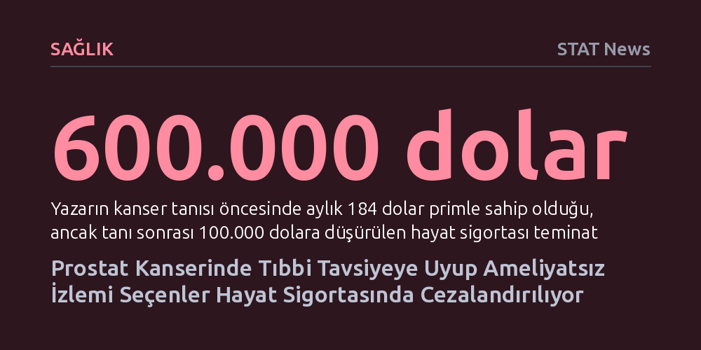

SAGLIK · STAT News · 2026-10-07
Düşük riskli prostat kanserinde hekim tavsiyesiyle ameliyat yerine aktif izlemi seçen hastalar, sigorta şirketlerince 'tedavi edilmemiş kanser' sayılarak poliçe ertelemeleri ve fahiş primlerle cezalandırılıyor. Bu finansal baskı, hastaları sağlıkları için gereksiz cerrahi müdahalelere zorlama riski yaratıyor.
Tıbbi açıdan en doğru ve bilimsel kararı vermenin, sigorta mekanizmalarının çağdışı risk algısı yüzünden hastaya ağır bir ekonomik fatura çıkarabileceğini gösteriyor.

Prostat kanseri teşhisi alan her hastanın derhal ameliyat masasına yatması ya da ağır radyasyon seanslarına girmesi gerekmiyor. Özellikle düşük riskli vakalarda ürologlar ve onkologlar, hastayı gereksiz cerrahi komplikasyonlardan ve kalıcı yan etkilerden korumak için 'aktif izlem' protokolünü öneriyor. Bu yaklaşımda tümör düzenli PSA kan testleri, biyopsiler ve manyetik rezonans (MR) görüntülemeleriyle yakından izleniyor. Tıbbi veriler, bu gruptaki hastaların ezici çoğunluğunun kanserden değil, kanserle birlikte başka doğal sebeplerden hayatını kaybedeceğini ortaya koyuyor.
Ne var ki tıbbın modern ve bilimsel kabul ettiği bu strateji, hayat sigortası masasına ulaştığında büyük bir dirence çarpıyor. Sigorta eksperleri, hekim tavsiyesine harfiyen uyarak ameliyatsız izlemi sürdüren hastaları 'tedavi edilmemiş kanser' kategorisine sokuyor. Yıllardır sağlığını hekim gözetiminde disiplinle takip eden bireyler, tıbbi kurallara uymadıkları için değil, tam aksine bilimin önerdiği yolu izledikleri için sigorta sisteminin dışına itiliyor veya fahiş prim artışlarıyla karşılaşıyor.
1960'larda geliştirilen Gleason puanlama sistemi, biyopsideki kanser hücrelerinin mikroskop altındaki dizilimini inceleyerek hastalığın saldırganlığını 6 ile 10 arasında derecelendiriyor. Bu ölçeğin en tabanında yer alan Gleason 6 (Grup 1), yayılma hızı son derece düşük ve klinik olarak sakin seyreden bir tabloyu temsil ediyor. Örneğin ileri evre Gleason 9 kanserlerin kemik metastazı yaptığı ağır tablolarla kıyaslandığında, Gleason 6 hastaları için erken cerrahi müdahale çoğu zaman faydadan çok idrar kaçırma veya iktidarsızlık gibi kalıcı hasarlar bırakabiliyor.
Buna karşın sigorta şirketlerinin risk modelleri bu biyolojik ayrımı kavramakta yetersiz kalıyor. Bir başvuru sahibinin dosyasında kanser kelimesinin yer alması ve karşılığında bir ameliyat ya da radyoterapi kaydının bulunmaması, şirketin risk algoritmasında doğrudan 'ihmal edilmiş bir hastalık' muamelesi görüyor. Dosyasında 16 yıl boyunca hiçbir ilerleme kaydedilmeyen, hastalığı tamamen durağan kalan bireyler bile, dosyadaki bu mekanik kodlama yüzünden yüz binlerce dolarlık hayat sigortası teminatını kaybedebiliyor.
Bugünkü sigorta piyasasının bu durumdaki erkeklere nasıl yaklaştığını test etmek amacıyla kurgulanan simülasyonlar, sorunun aradan geçen yıllara rağmen çözülmediğini gösteriyor. 64 yaşında yeni Gleason 6 tanısı almış ve geçmişte kalp krizi geçirmiş varsayımsal bir hasta üzerinden yapılan aracı değerlendirmeleri, sigorta şirketlerinin ilk refleksinin başvuruyu üç ila beş yıl ertelemek olduğunu ortaya koyuyor. Şirketler tümörün büyümediğini ve değerlerin stabil kaldığını görmek için hastayı senelerce bekletirken, hasta bu bekleme süresinde yaşlandığı için kaçınılmaz olarak çok daha pahalı prim dilimlerine sürükleniyor.
Bunun üzerine bir de kalp krizi gibi geçmiş rahatsızlıklar eklendiğinde, sigorta sektörünün 'tablo derecelendirmesi' devreye giriyor. Standart sağlık şartlarını karşılamayan başvurularda her kademenin prime yüzde 25 ek maliyet getirdiği bu sistemde, kalp geçmişi olan bir hasta altıncı tabloya yerleştirilerek primi yüzde 150 oranında artırılabiliyor. Sonuçta prostat kanseri başvurunun sonuçlanmasını yıllarca dondururken, eşlik eden kardiyovasküler risk yıllık maliyeti binlerce dolara fırlatıyor ve hasta fiilen poliçesiz kalıyor.
Bu çarpık işleyiş, hastaları son derece tehlikeli bir etik ve medikal ikilemle baş başa bırakıyor. Sırf ailesine makul bir hayat sigortası bırakabilmek adına, vücuduna hiçbir ek fayda sağlamayacak ağır bir prostat ameliyatını kabul etmek zorunda kalan hastalar olabilir mi? Eğer sigorta şirketleri ameliyat olmuş bir hastayı 'tedavi edilmiş' sayıp daha kolay sigortalıyor, izlemdeki hastayı ise 'tedavisiz' diyerek kapıdan çeviriyorsa, finansal sistem insanları tıbben gereksiz bıçak altına yatmaya fiilen teşvik ediyor demektir.
Çözüm, sigorta risk analistlerinin tıp dünyasıyla doğrudan diyalog kurmasından ve güncel onkoloji kılavuzlarını poliçe şartlarına yansıtmasından geçiyor. Yıllarca stabil kalan PSA değerleri ve temiz biyopsiler, ameliyat dikişlerinden çok daha güvenilir bir sağlık göstergesidir. Tıp derneklerinin ve sigorta komisyonlarının bu şeffaflığı talep etmesi, hem hastaların doğru tedavide kalmasını sağlayacak hem de sigorta sistemine duyulan güveni artıracaktır.